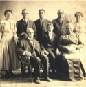

The Kleinsorge Family Tree - Family Card
The Kleinsorge Family Tree - Family Card
KLEINSORGE, Johann Fredrick Anton(May 17, 1801 - Jan 3, 1864)KLOER, Frederick Wilhelm(Mar 18, 1838 - Jun 3, 1888)
KÖHNE, Maria Anna(Feb 25, 1812 - Jan 21, 1874)SICKMAN, Marie Francisca(Sep 28, 1843 - Jun 11, 1876)
m. Aug 16, 1886, Westphalia, Kansas


b. Jul 7, 1852, Heiminghausen, Schmallenberg, Germany
d. Mar 17, 1932, Westphalia, Kansas
ado.

b. Jun 26, 1867, Montrose, Missouri
d. Jul 30, 1938, Germantown, Missouri
ado.
Children
> KLEINSORGE, Vincent Matthew(Jul 19, 1887 - May 26, 1962)
KLEINSORGE, Jacke(Jun 14, 1888 - Jun 14, 1888)
KLEINSORGE, Mary Anna(Dec 28, 1889 - Jul 12, 1979)
KLEINSORGE, Herman William(Apr 10, 1894 - Apr 11, 1962)
KLEINSORGE, Mary Rose(Jun 1, 1897 - Feb 9, 1986)
KLEINSORGE, Frank(Jul 2, 1903 - May 10, 1989)
KLEINSORGE, Johne(Mar 26, 1906 - Apr 5, 1906)